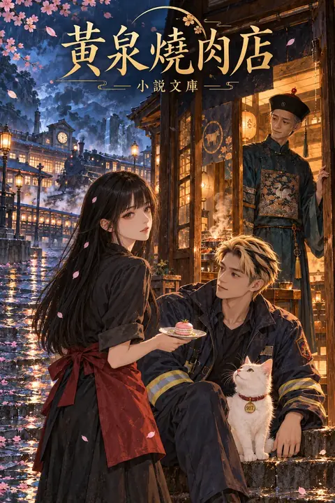
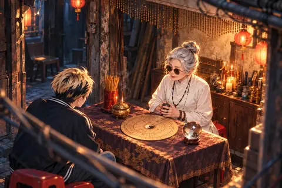
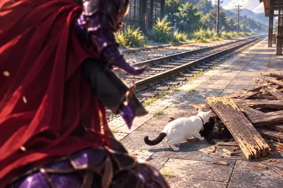
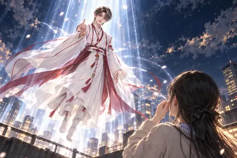

黃泉燒肉店
小說文庫
圖庫
目錄
Aa
字級
A−
A＋
背景
紙頁
米黃
夜讀
跟隨系統
封面與目錄
人物介紹
卷一 黃泉有店
01
黃泉的第一餐
02
沒能說完的話
03
走進火裡的人
04
列車帶來的重逢
卷二 北境篇
05
再叫一次你的名字
06
狐狸的夢
07
想留下的人
卷三 恨之歌
08
畫紙上的自己
09
那一晚的歌
10
跟著紅線走
11
被忘掉的愛
卷四 大秦右庶長
12
黃昏與祈願繩
13
勿念
卷五 魔界的獨角鯨
14
不必成為戰士
15
五百份想念
16
花海合攏之前
17
畫裡的鯨落
卷六 庚寅地球
18
先好好活著
19
口罩與紅傘
20
不同世界的牽掛
21
回家的方向
卷七 月老奪回作戰
22
還找得到的人
23
請別再帶走他們
附錄：原篇對照
插畫圖庫
欣賞插畫
圖庫
122 張插畫 ‧ 點圖片看大圖，可以左右切換
封面

封面
人物
老闆
小雨
大寶
咪咪
貢丸君
黑糖
月老
語彤
白妹
狐姬
九尾
陰曼的秦朝身分：陽滋公主
七號
利維坦
諾瓦
華佗
杜先生
梁安恆
林怡曼
鐵蛋
卷一 ‧ 黃泉有店
下輩子還要當你的狗
下輩子還能一起生活嗎
聽不見的求救（討好型人格）
不肯上當的橘貓站長
三途川重逢
錯誤的時代，沒有對的選擇
我原諒你了
我要薯條
海邊的薯條
媽媽來了

你的命是天煞孤星
消防隊的休息時間
爺爺祝你生日快樂
直升機正在上升
因為一隻烏薩奇
返魂坂的托夢照相館
她也有思念的人
那就抱我
卷二 ‧ 北境篇
照相館裡的託夢
杜先生與慰靈犬
帶你去公園玩
牽手走過奈何橋
這鍋湯太鹹了
我等你三輩子
佯裝炙熱的鼓勵
掛念心悸
醫院外的巧克力牛奶
河邊的螢火蟲
功德大富翁
親愛的神
市役所裡的擔保
卷三 ‧ 恨之歌
沒能等到救援
燒給語彤的心意
守宮廣場
守宮廣場
遺失的密碼
赤戀星空
就算我跑的再快
愛神大夜市
先承認自己會恨
閉嘴吃冰啦
愛神祭選拔
我想選月老
第六十一籤
借我抱一下
暈船雷達
刀鋸地獄
只能用一次的甘露寶瓶
忽然聞到妳的香味
卷四 ‧ 大秦右庶長
書裡沒寫完的往事
朱雀將軍
為何是黃昏
秦王的議事殿
糯米糍
七夕與定婚店
古神遺跡的石門
遠遠看著她開心
卷五 ‧ 魔界的獨角鯨
純愛砲擊
五百鯨落
阿七的甜品店
能不能不要去
魔王爸爸的道歉
去陽間走走
五百份想念
千里眼的保護
葬壽司
那加上我呢
說謊的方式
撒旦率軍降臨

愛比我想的更加偉大
諾瓦的畫展
諾瓦的畫展（本季終）
校車上醒來的人
諾瓦的畫展（本季終）
卷六 ‧ 庚寅地球
媽媽還在等你回家
一週的晚餐錢
你怎麼不早說
魂飛魄散之後
停車場邊的老杜
第二個月老
我們能不能彼此誠實
夜路上的巷影
偷看摩天輪的神明
口罩方舟計畫
華佗的忘憂舞
禁錮靈力的手銬
釣蝦場裡的安排
一首適合光頭的歌
留下來的生活
閉目入神

回家的方向
華佗的夜店舞臺
卷七 ‧ 月老奪回作戰
新神的責任
沒由來的惡夢
華佗看見衰弱的靈氣
護妹狂魔
魔王的手搖珍珠奶茶
神也好，魔也好
欠揍的刁民
神社前的詛咒
九一七號的約定
✕
‹
到這一章閱讀 →
›